Themes
Every declared theme: palette, the scrim’s measured contrast against the binding case, and each layout’s art with its regions drawn. This page is for looking. The schema already proves a box is square and inside the frame — what it cannot tell is whether the box is on the cat, which is how two crops shipped framing scenery and a third clipped a hard hat.
14 theme(s), 8 with art. A theme is chosen per note by whoever authors it — there is no mapping from a role or a kind to a theme — so “worn by” lists the landing-board cards that chose it, not every place it may appear. How themes are split into skills, and why contrast is measured over pure black, is on the theming page.
| theme | art, per layout — with regions | ||
|---|---|---|---|
Pale sage pale-sage stickyThe default. Matches the staging banner. surface #e9efe6ink #1c211bedge #c3cebeaccent #6f8c64no backdrop — art behind ink is what this theme removes A sticky on this theme. Square crop, faded by the theme's scrim. | declares no backdrop | ||
Pale sage, fading pale-sage-fade stickyThe sage with a soft vertical gradation. surface #e9efe6ink #1c211bedge #c3cebeaccent #6f8c64no backdrop — art behind ink is what this theme removes A sticky on this theme. Square crop, faded by the theme's scrim. | declares no backdrop | ||
Dusty Carolina blue dusty-carolina stickysurface #e3ebf2ink #181e25edge #b9c8d6accent #5b82a6no backdrop — art behind ink is what this theme removes A sticky on this theme. Square crop, faded by the theme's scrim. | declares no backdrop | ||
Dusty Carolina blue, fading dusty-carolina-fade stickyThe blue with a soft vertical gradation. surface #e3ebf2ink #181e25edge #b9c8d6accent #5b82a6no backdrop — art behind ink is what this theme removes A sticky on this theme. Square crop, faded by the theme's scrim. | declares no backdrop | ||
Grumpy cat grumpy-cat stickyWarm greys and a sage accent, after the mark. worn by folio-assist-coresurface #edeae4ink #221f1bedge #cbc5bbaccent #7d8a6e9.03:1ink over scrim on pure black · AAA floor 7:1 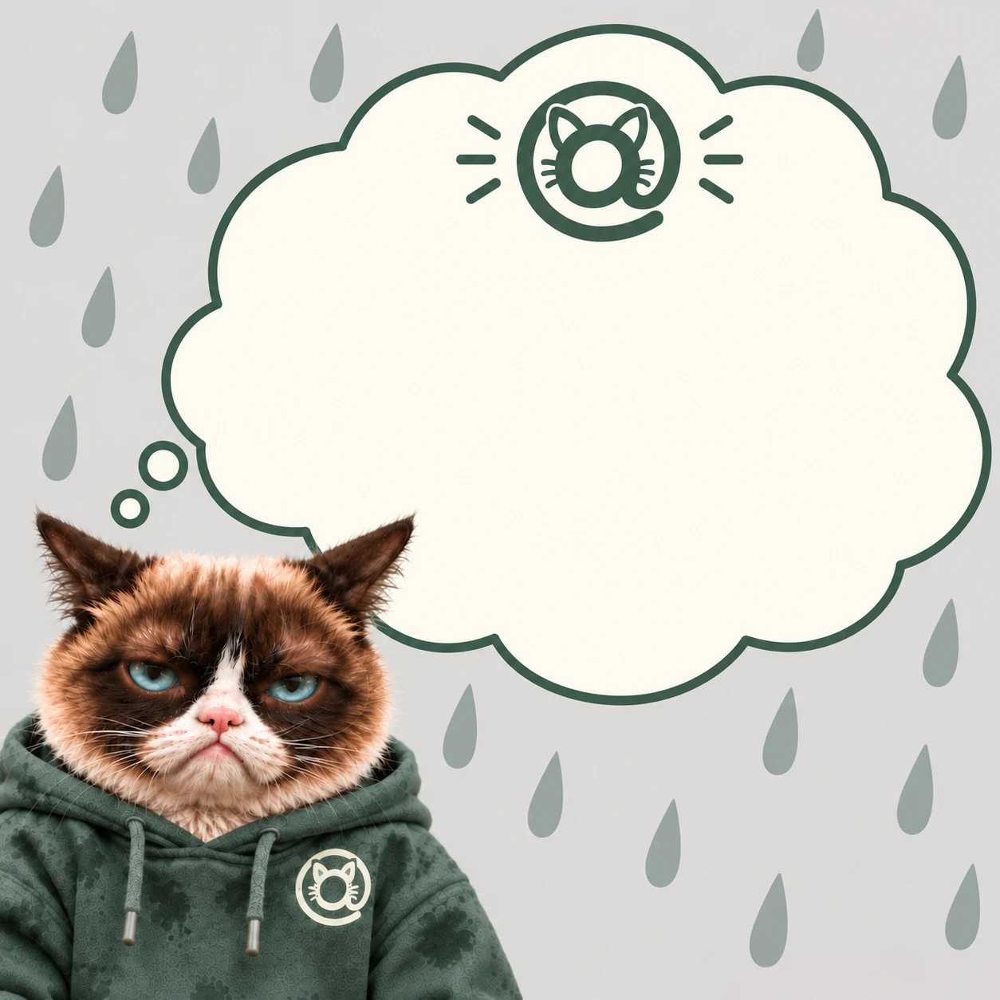 A sticky on this theme.Square crop, faded by the theme's scrim. | laptop 1671×941 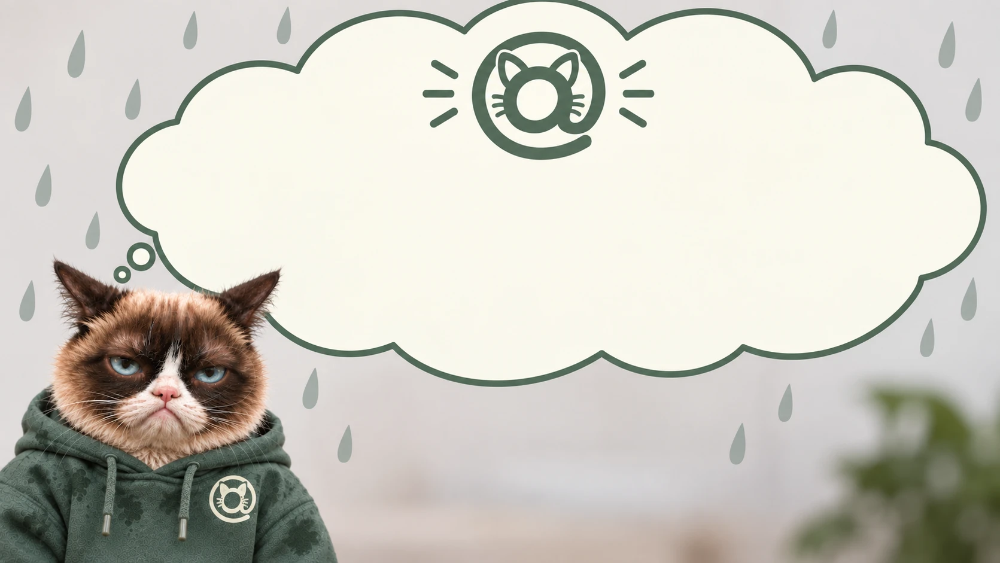 | mobile 941×1670 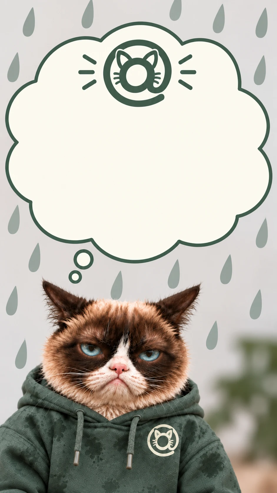 | card 1254×1254 |
Grumpy cyborg agents grumpy-cyborg-agents stickyCloud cream and a harness teal, behind the cat on the sled and the four robot cats pulling it. worn by cat-harnesssurface #fbf9efink #1c2a24edge #c5cdc3accent #2f7a809.29:1ink over scrim on pure black · AAA floor 7:1 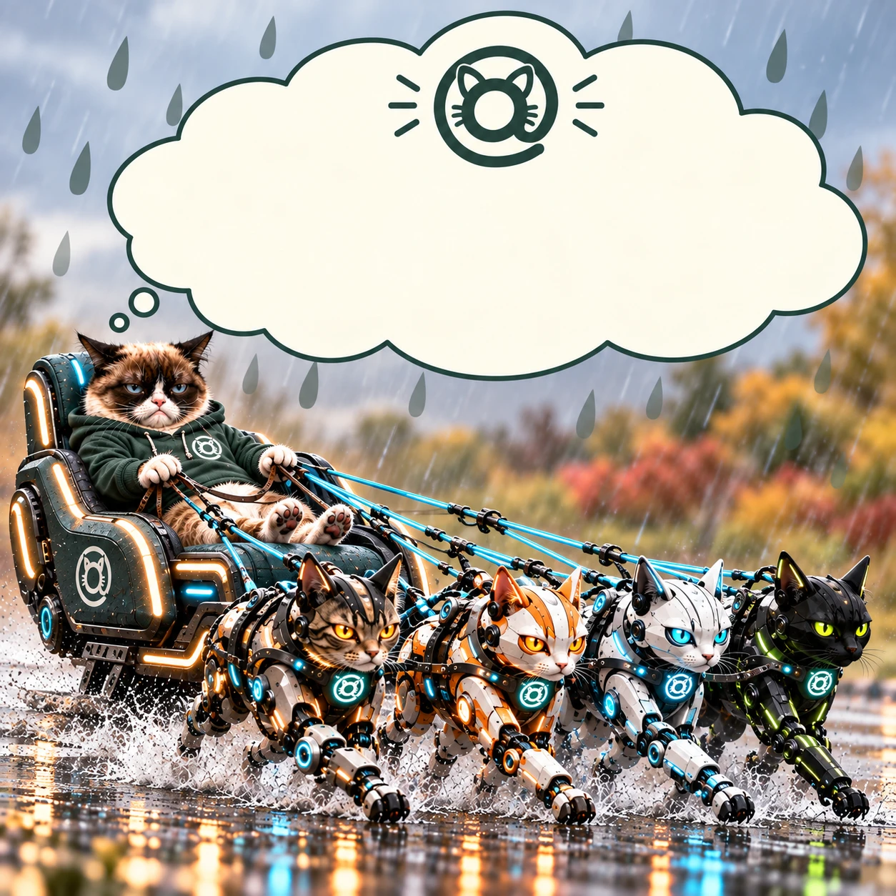 A sticky on this theme.Square crop, faded by the theme's scrim. | laptop 1659×948 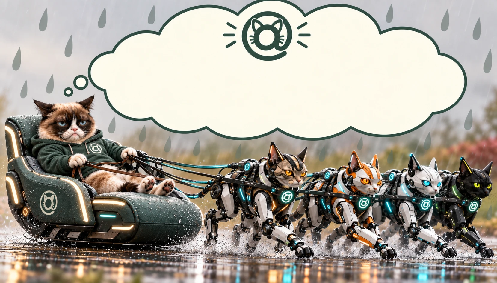 | mobile 1024×1536  | card 1254×1254 |
CatBootstrap bootstrap stickyDesert sand and sienna — the frontier at the start of the trail. worn by bootstrapsurface #f4f0e6ink #26211aedge #d8cdb6accent #b1683c9.26:1ink over scrim on pure black · AAA floor 7:1 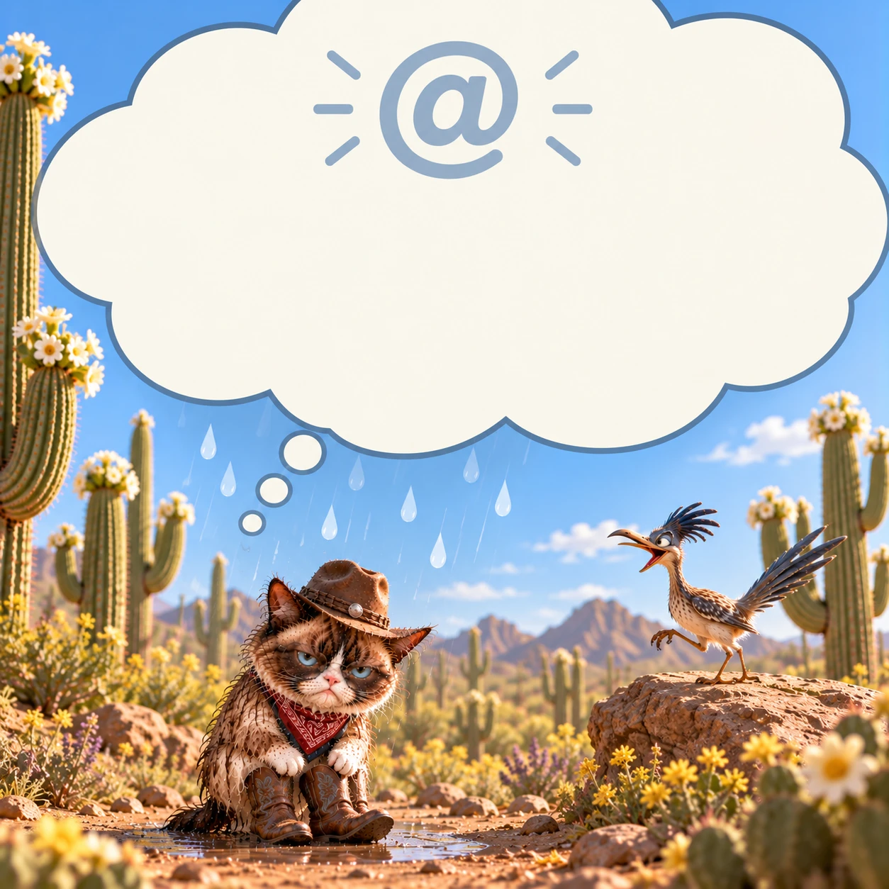 A sticky on this theme.Square crop, faded by the theme's scrim. | laptop 1536×1024 | mobile 941×1672  | card 1254×1254 |
Grumpy cat, operations operations stickySteel and blueprint blue — building the thing, and running it. surface #edf0f3ink #1a2129edge #ccd4dbaccent #3f6d9e9.36:1ink over scrim on pure black · AAA floor 7:1 A sticky on this theme. Square crop, faded by the theme's scrim. | laptop 1672×941 | mobile 1024×1536 | card 1254×1254 |
Grumpy cat, engineering engineer stickyThe cloud cream and a working green, behind the cat in a hi-vis vest. surface #fdfbefink #1f2a24edge #c9cfc4accent #5a6b5c9.38:1ink over scrim on pure black · AAA floor 7:1 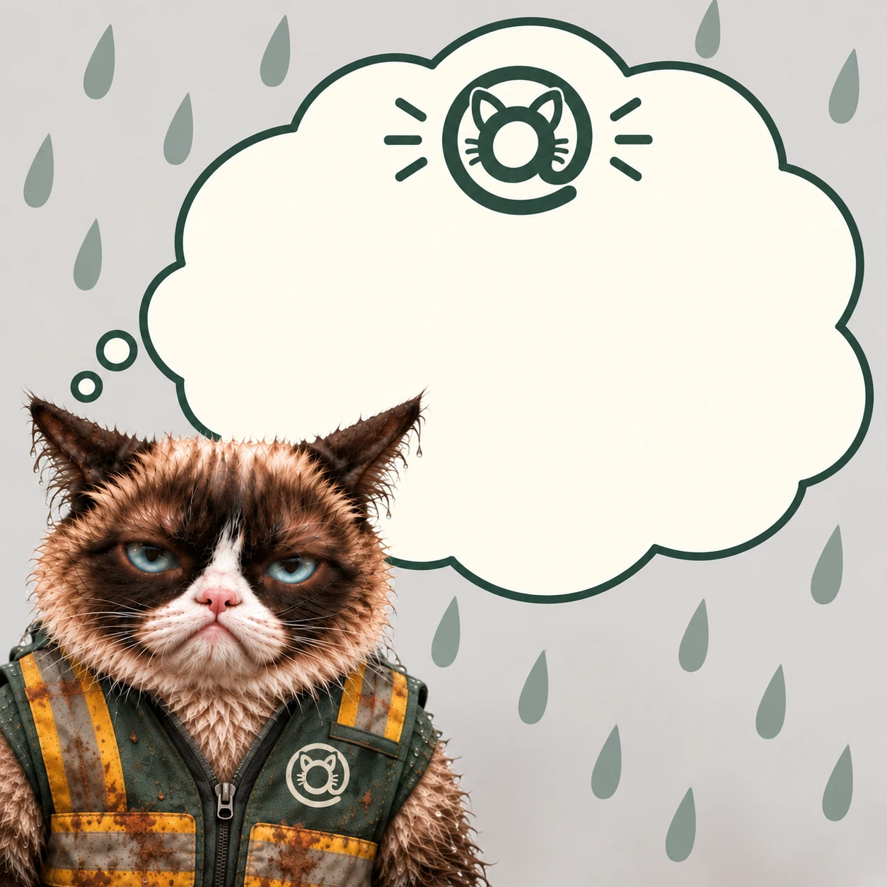 A sticky on this theme.Square crop, faded by the theme's scrim. | laptop 1672×941 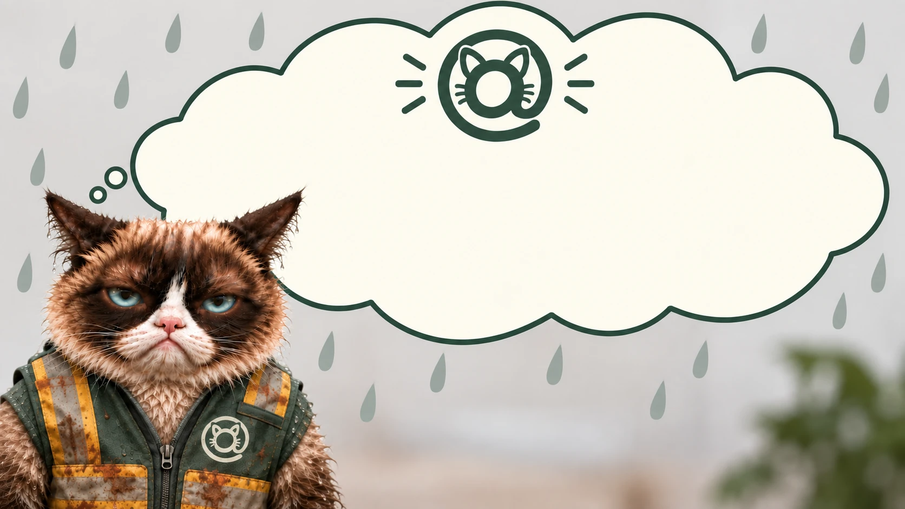 | mobile 942×1670 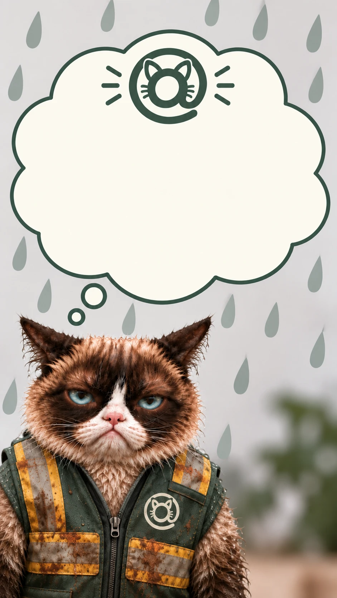 | card 1254×1254 |
Grumpy cat, librarian library stickyStorm slate and a cool cream, behind the cat with the books. surface #e8e8e0ink #1c2630edge #c2ccd4accent #5c74848.21:1ink over scrim on pure black · AAA floor 7:1 A sticky on this theme. Square crop, faded by the theme's scrim. | laptop 1669×942 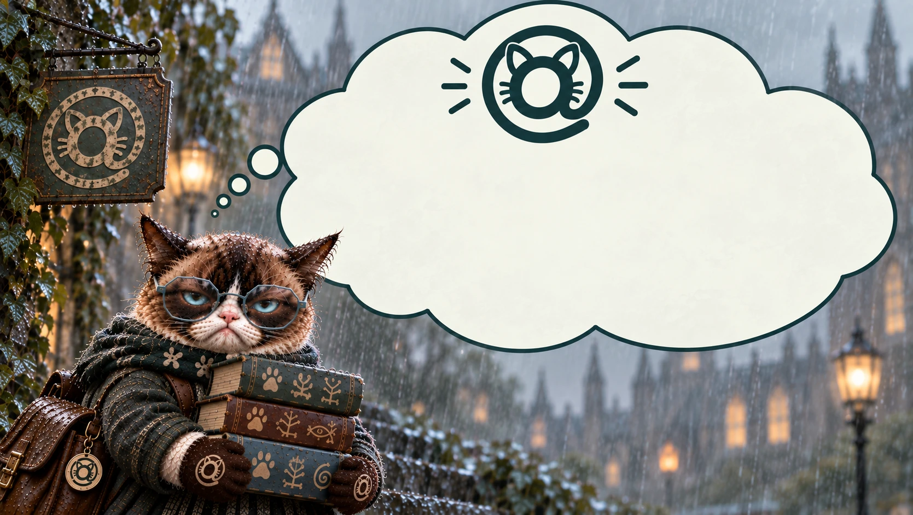 | mobile 1024×1536 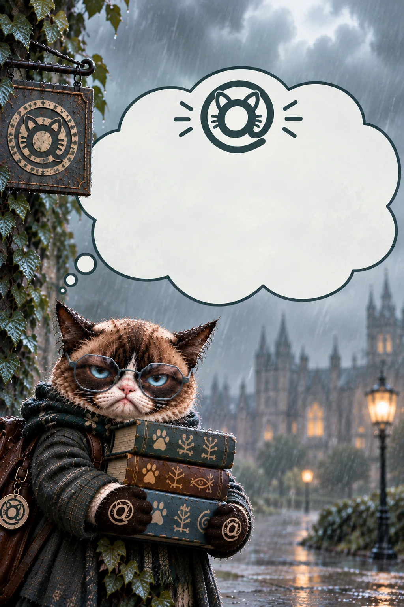 | card 1254×1254 |
Grumpy cat, analyst analyst stickyDaylight cream and a working blue, behind the cat with the charts. surface #f2f2e8ink #1e2a3aedge #cbd6e2accent #2f6ea88.44:1ink over scrim on pure black · AAA floor 7:1 A sticky on this theme. Square crop, faded by the theme's scrim. | laptop 1536×1024 | mobile 941×1672 | card 1254×1254 |
Grumpy cat, architecture architecture stickyCloud cream and a drafting slate, behind the cat with the rolled drawings. surface #fdfbf0ink #1a372dedge #a6aea8accent #6a7c739.02:1ink over scrim on pure black · AAA floor 7:1 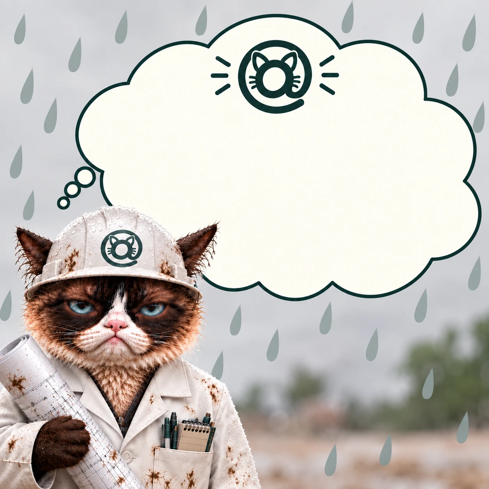 A sticky on this theme.Square crop, faded by the theme's scrim. | laptop 1671×941 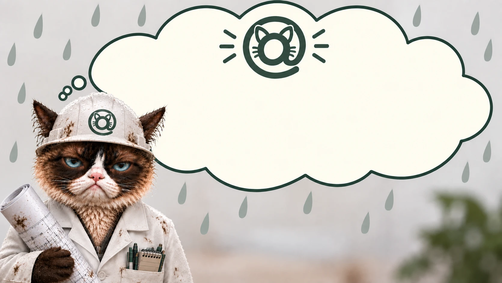 | mobile 941×1672 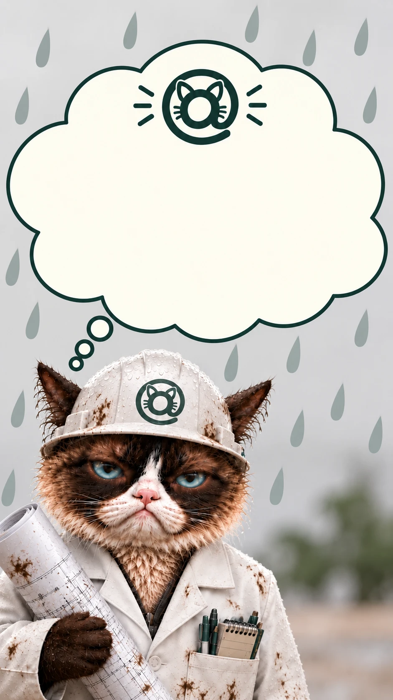 | card 1254×1254 |
High contrast, light high-contrast-light stickyBlack on white. No gradation, by design. surface #ffffffink #000000edge #000000accent #000000no backdrop — art behind ink is what this theme removes A sticky on this theme. Square crop, faded by the theme's scrim. | declares no backdrop | ||
High contrast, dark high-contrast-dark stickyWhite on black. No gradation, by design. surface #000000ink #ffffffedge #ffffffaccent #ffffffno backdrop — art behind ink is what this theme removes A sticky on this theme. Square crop, faded by the theme's scrim. | declares no backdrop | ||
Key: blue = textRegion, where words may be drawn · pink = avatarRegion, the square a frame clips to · the circle beneath is that clip at 46px, navbar size.